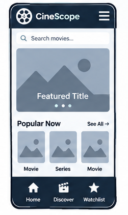
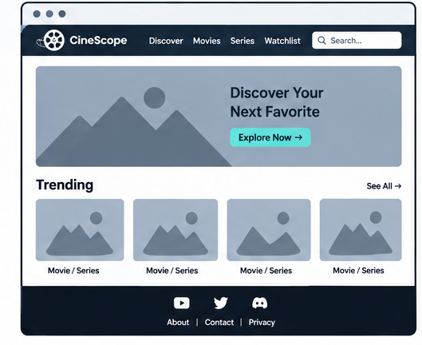

1. Site Name
CineScope – Movies and TV Series Guide
The name CineScope combines the words "Cinema" and "Scope," representing a broad view of the entertainment world. It communicates the website's purpose of helping visitors explore movies and television series, discover new titles, and learn more about the entertainment industry.
Proposed domain: cinescope.app
2. Site Purpose
CineScope is an informational website designed to help entertainment enthusiasts discover, explore, and learn more about movies and television series.
The website will dynamically retrieve information through external APIs and JSON data, presenting details such as titles, descriptions, genres, release dates, ratings, cast members, production studios, and promotional posters.
Main Website Pages
- Discover: Displays popular, trending, and recently released movies and television series. Visitors can browse titles and filter results by genre, release year, or category.
- Movies and TV Series: Provides a catalog of movies and television series, with detailed information about each title, including its synopsis, cast, genres, ratings, runtime or number of seasons, and release information.
- Watchlist and Recommendations: Allows visitors to explore recommended titles and discover movies and series based on genres and popularity.
3. Scenarios
These scenarios represent common questions that visitors may have when using CineScope.
- What are the most popular movies and television series currently trending?
- Where can I find information about a movie's cast, release date, genres, and rating?
- How can I discover movies and series based on my favorite genres?
- What television series have recently been released?
- Where can I find recommendations for movies similar to the ones I enjoy?
4. Color Scheme
CineScope will use a cinematic dark theme inspired by movie theaters and modern streaming platforms. Teal highlights will make important interactive elements stand out, while gold will be used for ratings and special highlights.
#101827
Main page background and footer.
#1B2738
Cards, sections, and content backgrounds.
#2DD4BF
Headings, buttons, links, and accents.
#F5B942
Ratings, highlights, and secondary accents.
#F4F6FA
Main text and important information.
#B8C2D1
Paragraphs, descriptions, and secondary text.
5. Typography
CineScope will use two Google Fonts to create a modern entertainment-focused visual identity while maintaining readability across different screen sizes.
Poppins – Headings and Titles
Discover Your Next Favorite Movie
Used for the website logo, main headings, section titles, and movie or television series titles.
Inter – Body Text and Interface
Explore movies, discover new releases, and learn more about your favorite entertainment.
Used for paragraphs, descriptions, navigation menus, buttons, labels, and general interface content.
6. Wireframe
The wireframes represent the structure and organization of the CineScope Discover page across mobile and desktop screen sizes.
Small Viewport – Mobile

Large Viewport – Desktop
